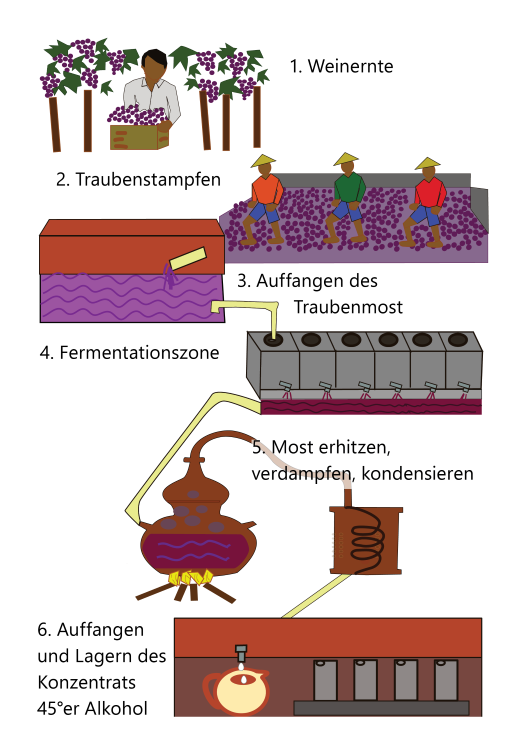

Angebote
Überzeugen Sie sich vom fruchtigen Geschmack unserer Getränke von hochwertiger Qualität.

fruchtiger Weinbrand, 0,5l, Traube: Quebranta
(20€)
{kind=link}
{kind=link}
Weitere Angebote

Pension in Subtanjalla, Ica mit 4 Zimmern, geleitet von Don Irineo.
Über uns
"Don Irineo" heißt Sie herzlich willkommen in Ica, der sonnig, süss und großzügigen Erde.
Die Produktion von qualitativ hochwertigem Pisco ist eine Tradition in unserer Familie. Die Trauben wachsen im eigenen Weingarten, der "Chakra".
In Ica beträgt die Sonnenscheindauer im Jahr 2.501 Stunden (Deutschland 1.723h) bei durchnschnittlich 22°C im Jahresverlauf. Ideale Bedingungen für die Entwicklung süßer und saftiger Trauben.
Hier herrscht eine lange Weinbautradition, die einige der besten Weingüter des Landes beherbergt. Ausgedehnte Weingärten erstrecken sich entlang der Küste, wo hervorragende Rotweine und Pisco hergestellt werden.
Der Traubenmost wird zu Wein und dem typisch peruanischen Weinbrand Pisco verarbeitet. Beim Brennen legen wir Wert auf eine konstante Temperatur beim erhitzen, die dem Pisco seinen charakteristischen Geschmack gibt. Je nachdem aus welcher Traubensorte oder -Mischung geeigneter Trauben der Schnaps gebrannt wurde und wie der Destillierprozess betrieben wird, entstehen vier Variationen.
Wie wird Pisco hergestellt?
Die Umschreibung für Pisco in spanisch lautet: "Destillado te Mostos fermentado" - "Destillat gegärten Traubenmosts". Der Prozess vom pflücken bis zum brennen verläuft so:
Die Trauben werden gelesen und dabei in zwei Gruppen eingeteilt. Die aromatischen: Albilla, Italia, Moscatel, Torontel und die nicht aromatischen: Quebranta, Mollar und Uvina. Welche für den Weinbrand verwendet werden ist Sache der Brennerei.
Vor dem Gären werden die Trauben entkernt und ausgepresst. Fertig gegoren und gesiebt verbleibt der Traubenmost. Dieser wird in das Destilliergefäß gegeben das durch einen Brenner oder Feuer erhitzt wird. Dadurch entsteht Wasserdampf der durch den Schwanenhals geleitet den Kühltank erreicht, wo er wieder kondensiert. Das Ergebnis ist purer Pisco.
Destillationsprozess:
